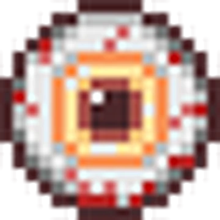
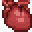
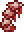

The Brain of Cthulhu is likely to be the third boss that a player would fight on worlds that contain the Crimson, following Eye of Cthulhu and Slime King.
It is a massive brain surrounded by 20 eyes known as Creepers that protect it.
When the boss first spawns in, it is invulnerable. The player must defeat all 20 Creepers before the boss can be attacked directly.
Once all Creepers are dead, the brain visually 'opens up' and becomes vulnerable to attack, signalling the start of phase 2.
In phase two, the brain will rapidly teleport around and try to ram into the player. It can be held back by attacking it.
The brain will create 3 hallucinations of itself in order to try and confuse the player.
These hallucinations will close in on the player from other directions. Hallucinations cannot damage the player, and are instead meant to make it harder to locate and attack the actual boss.
As the boss loses health, these hallucinations become harder to distinguish from the actual boss.
The Brain of Cthulhu cannot spawn without direct player action. There are 2 ways to achieve this.
Breaking 3 Crimson Hearts found inside of the Crimon Biome will cause the boss to spawn.
Alternatively, an item known as a Bloody Spine can be created and used in the Crimson to spawn the boss.
| Difficulty: | Classic | Expert | Master |
|---|---|---|---|
| Health: | 1250 | 2125 | 2709 |
| Attack: | 30 | 54 | 81 |
| Defense: | 14 | 14 | 14 |
Photo of a Creeper
Photo of a Crimson Heart
Photo of a Bloody Spine
